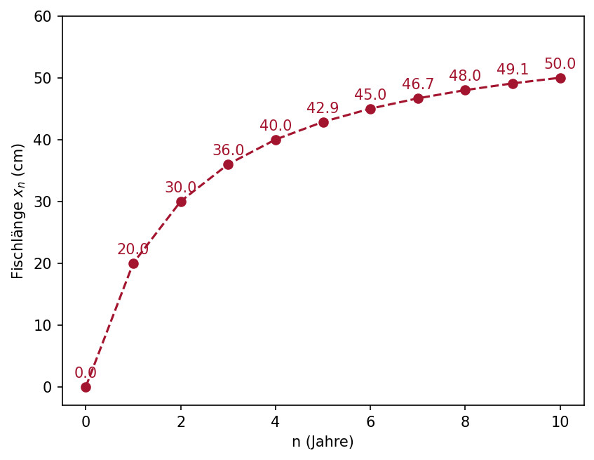
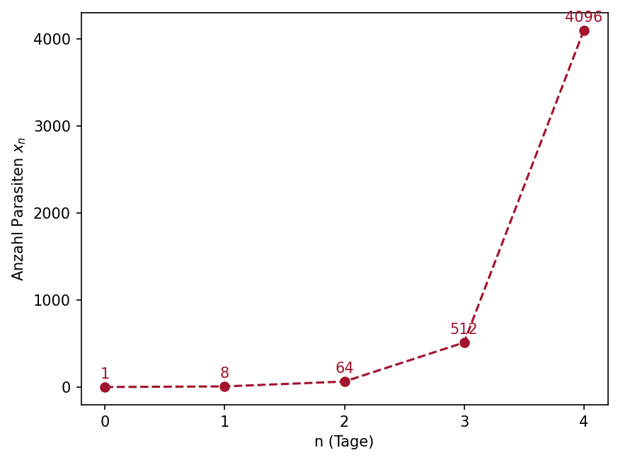
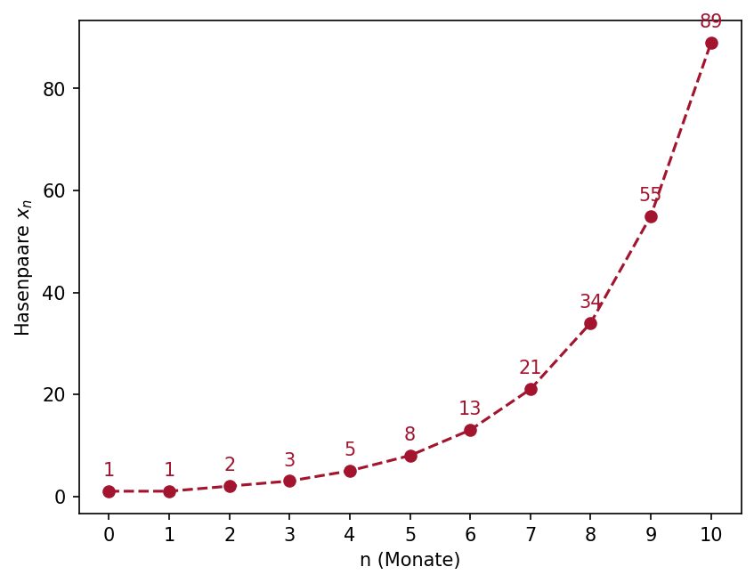
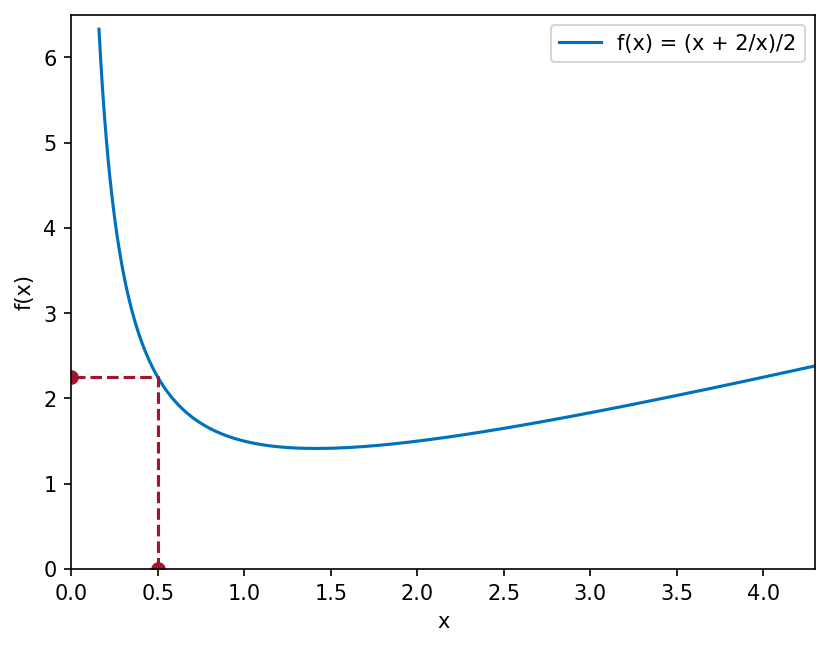
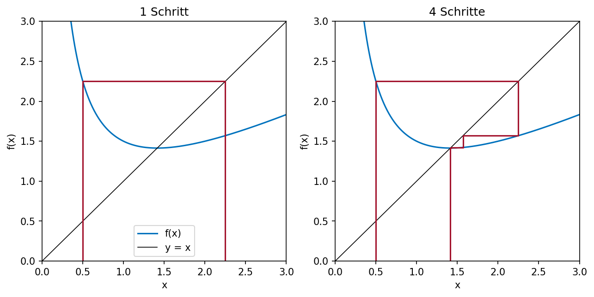

Kapitel 1 · Diskrete dynamische Systeme mit einer Variablen
1.1Folgen und Differenzengleichungen
Folgen beschreiben Größen, die man in festen Zeitschritten betrachtet: die Länge eines Fisches Jahr für Jahr, die Zahl der Malaria-Parasiten Tag für Tag, Hasenpaare Monat für Monat. Eine Folge kann durch eine Formel für das n-te Glied gegeben sein oder durch eine Rekursionsvorschrift, die jedes Glied aus seinem Vorgänger berechnet.
Zu jeder Abbildung des Abschnitts finden Sie das Programm, das sie erzeugt. Ändern Sie Parameter und Startwerte und beobachten Sie, was passiert. Abbildungs- und Gleichungsnummern beziehen sich auf das Buch.
Abb. 1.1
Fischlänge nach n Jahren
xn = 60n / (n + 2)
Eine explizit gegebene Folge: Das Programm wertet die Formel für n = 0, …, 10 aus. Die gestrichelten Linien dienen nur der Anschauung; Folgenglieder gibt es nur für ganze Zahlen n.

# Abb. 1.1: Fischlänge nach n Jahren (Buch, Abschnitt 1.1, Gl. 1.1)
# explizite Folge x_n = 60 n / (n + 2)
# (c) 2026 Philipp Kügler · Programm zum Buch „Dynamische Systeme in den Lebenswissenschaften“ · MIT-Lizenz (siehe LICENSE)
using Printf, Plots
n = 0:10 # n = 0, 1, ..., 10
x = 60 .* n ./ (n .+ 2) # Formel für das n-te Folgenglied (elementweise mit Punkt)
println(join([@sprintf("%.1f", v) for v in x], " ")) # 0.0 20.0 30.0 36.0 ...
rot = RGB(0.64, 0.08, 0.18)
p = plot(n, x, ls = :dash, marker = :circle, color = rot, legend = false, ylims = (-3, 60),
xlabel = "n (Jahre)", ylabel = "Fischlänge x_n (cm)")
annotate!(p, [(n[k], x[k] + 2.5, text(@sprintf("%.1f", x[k]), 8, rot)) for k in eachindex(n)])
display(p)% Abb. 1.1: Fischlänge nach n Jahren (Buch, Abschnitt 1.1, Gl. 1.1)
% explizite Folge x_n = 60 n / (n + 2)
% (c) 2026 Philipp Kügler · Programm zum Buch „Dynamische Systeme in den Lebenswissenschaften“ · MIT-Lizenz (siehe LICENSE)
n = 0:10; % n = 0, 1, ..., 10
x = 60 * n ./ (n + 2); % Formel für das n-te Folgenglied (elementweise ./)
fprintf('%.1f ', x); fprintf('\n') % 0.0 20.0 30.0 36.0 40.0 42.9 45.0 ...
rot = [0.64 0.08 0.18];
plot(n, x, 'o--', 'Color', rot, 'MarkerFaceColor', rot); hold on
for k = 1:numel(n)
text(n(k), x(k) + 1.5, sprintf('%.1f', x(k)), 'HorizontalAlignment', 'center', 'Color', rot)
end
hold off
xlabel('n (Jahre)'); ylabel('Fischlänge x_n (cm)'); ylim([-3 60])# Abb. 1.1: Fischlänge nach n Jahren (Buch, Abschnitt 1.1, Gl. 1.1)
# explizite Folge x_n = 60 n / (n + 2)
# (c) 2026 Philipp Kügler · Programm zum Buch „Dynamische Systeme in den Lebenswissenschaften“ · MIT-Lizenz (siehe LICENSE)
import numpy as np
import matplotlib.pyplot as plt
n = np.arange(0, 11) # n = 0, 1, ..., 10
x = 60 * n / (n + 2) # Formel für das n-te Folgenglied
print(" ".join(f"{v:.1f}" for v in x)) # 0.0 20.0 30.0 36.0 40.0 42.9 45.0 ...
plt.plot(n, x, "o--", color=(0.64, 0.08, 0.18))
for k in n:
plt.text(k, x[k] + 1.5, f"{x[k]:.1f}", ha="center", color=(0.64, 0.08, 0.18))
plt.xlabel("n (Jahre)")
plt.ylabel("Fischlänge $x_n$ (cm)")
plt.ylim(-3, 60)
plt.show()# Abb. 1.1: Fischlänge nach n Jahren (Buch, Abschnitt 1.1, Gl. 1.1)
# explizite Folge x_n = 60 n / (n + 2)
# (c) 2026 Philipp Kügler · Programm zum Buch „Dynamische Systeme in den Lebenswissenschaften“ · MIT-Lizenz (siehe LICENSE)
n <- 0:10 # n = 0, 1, ..., 10
x <- 60 * n / (n + 2) # Formel für das n-te Folgenglied (elementweise)
cat(sprintf("%.1f", x), "\n") # 0.0 20.0 30.0 36.0 40.0 42.9 45.0 ...
rot <- rgb(0.64, 0.08, 0.18)
plot(n, x, type = "o", lty = 2, pch = 16, col = rot, ylim = c(-3, 60),
xlab = "n (Jahre)", ylab = "Fischlänge x_n (cm)")
text(n, x + 2.5, sprintf("%.1f", x), col = rot, cex = 0.8)Ausgabe im Befehlsfenster
0.0 20.0 30.0 36.0 40.0 42.9 45.0 46.7 48.0 49.1 50.0Abb. 1.3
Malaria-Parasiten nach n Tagen
xn+1 = 8 xn, x0 = 1
Die Schleife wendet die Rekursionsvorschrift viermal an. Die Lösungsformel xn = 8n x0 liefert dieselben Zahlen ohne Zwischenschritte.

# Abb. 1.3: Malaria-Parasiten nach n Tagen (Buch, Abschnitt 1.1, Gl. 1.2 und 1.3)
# Rekursionsvorschrift x_{n+1} = 8 x_n, x_0 = 1
# (c) 2026 Philipp Kügler · Programm zum Buch „Dynamische Systeme in den Lebenswissenschaften“ · MIT-Lizenz (siehe LICENSE)
using Plots
N = 4 # Anzahl der Tage
x = zeros(Int, N + 1)
x[1] = 1 # Startwert x_0 = 1 (Julia zählt ab 1: x[1] ist x_0)
for k in 1:N
x[k + 1] = 8 * x[k] # Rekursionsvorschrift
end
n = 0:N
println(x) # [1, 8, 64, 512, 4096]
println(8 .^ n .* x[1]) # Lösungsformel x_n = 8^n x_0 liefert dasselbe
rot = RGB(0.64, 0.08, 0.18)
p = plot(n, x, ls = :dash, marker = :circle, color = rot, legend = false, xticks = n,
xlabel = "n (Tage)", ylabel = "Anzahl Parasiten x_n")
annotate!(p, [(n[k], x[k] + 250, text(string(x[k]), 8, rot)) for k in eachindex(n)])
display(p)% Abb. 1.3: Malaria-Parasiten nach n Tagen (Buch, Abschnitt 1.1, Gl. 1.2 und 1.3)
% Rekursionsvorschrift x_{n+1} = 8 x_n, x_0 = 1
% (c) 2026 Philipp Kügler · Programm zum Buch „Dynamische Systeme in den Lebenswissenschaften“ · MIT-Lizenz (siehe LICENSE)
N = 4; % Anzahl der Tage
x = zeros(1, N + 1);
x(1) = 1; % Startwert x_0 = 1 (MATLAB zählt ab 1: x(1) ist x_0)
for k = 1:N
x(k + 1) = 8 * x(k); % Rekursionsvorschrift
end
n = 0:N;
disp(x) % 1 8 64 512 4096
disp(8.^n * x(1)) % Lösungsformel x_n = 8^n x_0 liefert dasselbe
rot = [0.64 0.08 0.18];
plot(n, x, 'o--', 'Color', rot, 'MarkerFaceColor', rot); hold on
for k = 1:numel(n)
text(n(k), x(k) + 100, sprintf('%d', x(k)), 'HorizontalAlignment', 'center', 'Color', rot)
end
hold off
xlabel('n (Tage)'); ylabel('Anzahl Parasiten x_n'); xticks(n)# Abb. 1.3: Malaria-Parasiten nach n Tagen (Buch, Abschnitt 1.1, Gl. 1.2 und 1.3)
# Rekursionsvorschrift x_{n+1} = 8 x_n, x_0 = 1
# (c) 2026 Philipp Kügler · Programm zum Buch „Dynamische Systeme in den Lebenswissenschaften“ · MIT-Lizenz (siehe LICENSE)
import numpy as np
import matplotlib.pyplot as plt
N = 4 # Anzahl der Tage
x = np.zeros(N + 1)
x[0] = 1 # Startwert: ein Parasit
for n in range(N):
x[n + 1] = 8 * x[n] # Rekursionsvorschrift
n = np.arange(N + 1)
print(x.astype(int)) # [1 8 64 512 4096]
print((8**n * x[0]).astype(int)) # Lösungsformel x_n = 8^n x_0 liefert dasselbe
plt.plot(n, x, "o--", color=(0.64, 0.08, 0.18))
for k in n:
plt.text(k, x[k] + 100, f"{x[k]:.0f}", ha="center", color=(0.64, 0.08, 0.18))
plt.xlabel("n (Tage)")
plt.ylabel("Anzahl Parasiten $x_n$")
plt.xticks(n)
plt.show()# Abb. 1.3: Malaria-Parasiten nach n Tagen (Buch, Abschnitt 1.1, Gl. 1.2 und 1.3)
# Rekursionsvorschrift x_{n+1} = 8 x_n, x_0 = 1
# (c) 2026 Philipp Kügler · Programm zum Buch „Dynamische Systeme in den Lebenswissenschaften“ · MIT-Lizenz (siehe LICENSE)
N <- 4 # Anzahl der Tage
x <- numeric(N + 1)
x[1] <- 1 # Startwert x_0 = 1 (R zählt ab 1: x[1] ist x_0)
for (k in 1:N) {
x[k + 1] <- 8 * x[k] # Rekursionsvorschrift
}
n <- 0:N
cat(x, "\n") # 1 8 64 512 4096
cat(8^n * x[1], "\n") # Lösungsformel x_n = 8^n x_0 liefert dasselbe
rot <- rgb(0.64, 0.08, 0.18)
plot(n, x, type = "o", lty = 2, pch = 16, col = rot, xaxt = "n", ylim = c(0, 4500),
xlab = "n (Tage)", ylab = "Anzahl Parasiten x_n")
axis(1, at = n)
text(n, x + 250, x, col = rot, cex = 0.8)Ausgabe im Befehlsfenster
[ 1 8 64 512 4096]
[ 1 8 64 512 4096]Abb. 1.4
Fibonacci-Folge
xn+1 = xn + xn−1, x0 = x1 = 1
Eine Differenzengleichung 2. Ordnung mit zwei Startwerten. Das Programm vergleicht die rekursiv berechneten Zahlen mit der Lösungsformel (1.6).

# Abb. 1.4: Fibonacci-Folge (Buch, Abschnitt 1.1, Gl. 1.5 und 1.6)
# x_{n+1} = x_n + x_{n-1}, x_0 = x_1 = 1
# (c) 2026 Philipp Kügler · Programm zum Buch „Dynamische Systeme in den Lebenswissenschaften“ · MIT-Lizenz (siehe LICENSE)
using Plots
N = 10 # Anzahl der Monate
x = zeros(Int, N + 1)
x[1] = 1; x[2] = 1 # zwei Startwerte x_0 und x_1 (Julia zählt ab 1)
for k in 2:N
x[k + 1] = x[k] + x[k - 1] # Rekursionsvorschrift
end
n = 0:N
phi = (1 + sqrt(5)) / 2; psi = (1 - sqrt(5)) / 2
formel = (phi .^ (n .+ 1) .- psi .^ (n .+ 1)) ./ sqrt(5) # Lösungsformel (Gl. 1.6)
println(x) # [1, 1, 2, 3, 5, 8, 13, 21, 34, 55, 89]
println(round.(Int, formel)) # Lösungsformel liefert dieselben Zahlen
rot = RGB(0.64, 0.08, 0.18)
p = plot(n, x, ls = :dash, marker = :circle, color = rot, legend = false, xticks = n,
xlabel = "n (Monate)", ylabel = "Hasenpaare x_n")
annotate!(p, [(n[k], x[k] + 4, text(string(x[k]), 8, rot)) for k in eachindex(n)])
display(p)% Abb. 1.4: Fibonacci-Folge (Buch, Abschnitt 1.1, Gl. 1.5 und 1.6)
% x_{n+1} = x_n + x_{n-1}, x_0 = x_1 = 1
% (c) 2026 Philipp Kügler · Programm zum Buch „Dynamische Systeme in den Lebenswissenschaften“ · MIT-Lizenz (siehe LICENSE)
N = 10; % Anzahl der Monate
x = zeros(1, N + 1);
x(1) = 1; x(2) = 1; % zwei Startwerte x_0 und x_1 (MATLAB zählt ab 1)
for k = 2:N
x(k + 1) = x(k) + x(k - 1); % Rekursionsvorschrift
end
n = 0:N;
phi = (1 + sqrt(5)) / 2; psi = (1 - sqrt(5)) / 2;
formel = (phi.^(n + 1) - psi.^(n + 1)) / sqrt(5); % Lösungsformel (Gl. 1.6)
disp(x) % 1 1 2 3 5 8 13 21 34 55 89
disp(round(formel)) % Lösungsformel liefert dieselben Zahlen
rot = [0.64 0.08 0.18];
plot(n, x, 'o--', 'Color', rot, 'MarkerFaceColor', rot); hold on
for k = 1:numel(n)
text(n(k), x(k) + 3, sprintf('%d', x(k)), 'HorizontalAlignment', 'center', 'Color', rot)
end
hold off
xlabel('n (Monate)'); ylabel('Hasenpaare x_n'); xticks(n)# Abb. 1.4: Fibonacci-Folge (Buch, Abschnitt 1.1, Gl. 1.5 und 1.6)
# x_{n+1} = x_n + x_{n-1}, x_0 = x_1 = 1
# (c) 2026 Philipp Kügler · Programm zum Buch „Dynamische Systeme in den Lebenswissenschaften“ · MIT-Lizenz (siehe LICENSE)
import numpy as np
import matplotlib.pyplot as plt
N = 10 # Anzahl der Monate
x = np.zeros(N + 1)
x[0], x[1] = 1, 1 # zwei Startwerte (Differenzengleichung 2. Ordnung)
for n in range(1, N):
x[n + 1] = x[n] + x[n - 1] # Rekursionsvorschrift
n = np.arange(N + 1)
phi, psi = (1 + np.sqrt(5)) / 2, (1 - np.sqrt(5)) / 2
formel = (phi**(n + 1) - psi**(n + 1)) / np.sqrt(5) # Lösungsformel (Gl. 1.6)
print(x.astype(int)) # [1 1 2 3 5 8 13 21 34 55 89]
print(np.round(formel).astype(int)) # Lösungsformel liefert dieselben Zahlen
plt.plot(n, x, "o--", color=(0.64, 0.08, 0.18))
for k in n:
plt.text(k, x[k] + 3, f"{x[k]:.0f}", ha="center", color=(0.64, 0.08, 0.18))
plt.xlabel("n (Monate)")
plt.ylabel("Hasenpaare $x_n$")
plt.xticks(n)
plt.show()# Abb. 1.4: Fibonacci-Folge (Buch, Abschnitt 1.1, Gl. 1.5 und 1.6)
# x_{n+1} = x_n + x_{n-1}, x_0 = x_1 = 1
# (c) 2026 Philipp Kügler · Programm zum Buch „Dynamische Systeme in den Lebenswissenschaften“ · MIT-Lizenz (siehe LICENSE)
N <- 10 # Anzahl der Monate
x <- numeric(N + 1)
x[1] <- 1; x[2] <- 1 # zwei Startwerte x_0 und x_1 (R zählt ab 1)
for (k in 2:N) {
x[k + 1] <- x[k] + x[k - 1] # Rekursionsvorschrift
}
n <- 0:N
phi <- (1 + sqrt(5)) / 2; psi <- (1 - sqrt(5)) / 2
formel <- (phi^(n + 1) - psi^(n + 1)) / sqrt(5) # Lösungsformel (Gl. 1.6)
cat(x, "\n") # 1 1 2 3 5 8 13 21 34 55 89
cat(round(formel), "\n") # Lösungsformel liefert dieselben Zahlen
rot <- rgb(0.64, 0.08, 0.18)
plot(n, x, type = "o", lty = 2, pch = 16, col = rot, xaxt = "n", ylim = c(0, 95),
xlab = "n (Monate)", ylab = "Hasenpaare x_n")
axis(1, at = n)
text(n, x + 4, x, col = rot, cex = 0.8)Ausgabe im Befehlsfenster
[ 1 1 2 3 5 8 13 21 34 55 89]
[ 1 1 2 3 5 8 13 21 34 55 89]Abb. 1.7
Aktualisierungsfunktion des Heron-Verfahrens
f(x) = ½ (x + 2/x)
Der Graph der Aktualisierungsfunktion zeigt, wie aus x0 = 0.5 der nächste Wert x1 = f(x0) = 2.25 entsteht.

# Abb. 1.7: Aktualisierungsfunktion des Heron-Verfahrens (Buch, Abschnitt 1.1, Gl. 1.4)
# f(x) = (x + 2/x)/2 und erster Schritt x_0 = 0.5 -> x_1 = f(x_0)
# (c) 2026 Philipp Kügler · Programm zum Buch „Dynamische Systeme in den Lebenswissenschaften“ · MIT-Lizenz (siehe LICENSE)
using Printf, Plots
f(x) = 0.5 * (x + 2 / x)
x0 = 0.5
x1 = f(x0)
@printf("x_0 = %g, x_1 = f(x_0) = %g\n", x0, x1) # x_1 = 2.25
rot = RGB(0.64, 0.08, 0.18); blau = RGB(0, 0.447, 0.741)
x = range(0.16, 4.3, length = 400)
p = plot(x, f.(x), color = blau, lw = 2, label = "f(x) = (x + 2/x)/2", xlims = (0, 4.3), ylims = (0, 6.5),
xlabel = "x", ylabel = "f(x)")
plot!(p, [x0, x0, 0], [0, x1, x1], ls = :dash, color = rot, label = "") # hoch zur Kurve, dann zur y-Achse
scatter!(p, [x0, 0], [0, x1], color = rot, label = "")
display(p)% Abb. 1.7: Aktualisierungsfunktion des Heron-Verfahrens (Buch, Abschnitt 1.1, Gl. 1.4)
% f(x) = (x + 2/x)/2 und erster Schritt x_0 = 0.5 -> x_1 = f(x_0)
% (c) 2026 Philipp Kügler · Programm zum Buch „Dynamische Systeme in den Lebenswissenschaften“ · MIT-Lizenz (siehe LICENSE)
f = @(x) 0.5 * (x + 2 ./ x);
x0 = 0.5;
x1 = f(x0);
fprintf('x_0 = %g, x_1 = f(x_0) = %g\n', x0, x1); % x_1 = 2.25
rot = [0.64 0.08 0.18]; blau = [0 0.447 0.741];
x = linspace(0.16, 4.3, 400);
plot(x, f(x), 'Color', blau); hold on
plot([x0 x0 0], [0 x1 x1], '--', 'Color', rot); % hoch zur Kurve, dann zur y-Achse
plot([x0 0], [0 x1], 'o', 'Color', rot, 'MarkerFaceColor', rot);
hold off
xlim([0 4.3]); ylim([0 6.5]);
xlabel('x'); ylabel('f(x)'); legend('f(x) = (x + 2/x)/2');# Abb. 1.7: Aktualisierungsfunktion des Heron-Verfahrens (Buch, Abschnitt 1.1, Gl. 1.4)
# f(x) = (x + 2/x)/2 und erster Schritt x_0 = 0.5 -> x_1 = f(x_0)
# (c) 2026 Philipp Kügler · Programm zum Buch „Dynamische Systeme in den Lebenswissenschaften“ · MIT-Lizenz (siehe LICENSE)
import numpy as np
import matplotlib.pyplot as plt
f = lambda x: 0.5 * (x + 2 / x)
x0 = 0.5
x1 = f(x0)
print(f"x_0 = {x0}, x_1 = f(x_0) = {x1}") # x_1 = 2.25
x = np.linspace(0.16, 4.3, 400)
plt.plot(x, f(x), color=(0, 0.447, 0.741), label="f(x) = (x + 2/x)/2")
plt.plot([x0, x0, 0], [0, x1, x1], "--", color=(0.64, 0.08, 0.18)) # hoch zur Kurve, dann zur y-Achse
plt.plot([x0, 0], [0, x1], "o", color=(0.64, 0.08, 0.18))
plt.xlim(0, 4.3); plt.ylim(0, 6.5)
plt.xlabel("x"); plt.ylabel("f(x)"); plt.legend()
plt.show()# Abb. 1.7: Aktualisierungsfunktion des Heron-Verfahrens (Buch, Abschnitt 1.1, Gl. 1.4)
# f(x) = (x + 2/x)/2 und erster Schritt x_0 = 0.5 -> x_1 = f(x_0)
# (c) 2026 Philipp Kügler · Programm zum Buch „Dynamische Systeme in den Lebenswissenschaften“ · MIT-Lizenz (siehe LICENSE)
f <- function(x) 0.5 * (x + 2 / x)
x0 <- 0.5
x1 <- f(x0)
cat(sprintf("x_0 = %g, x_1 = f(x_0) = %g\n", x0, x1)) # x_1 = 2.25
rot <- rgb(0.64, 0.08, 0.18); blau <- rgb(0, 0.447, 0.741)
x <- seq(0.16, 4.3, length.out = 400)
plot(x, f(x), type = "l", col = blau, lwd = 2, xlim = c(0, 4.3), ylim = c(0, 6.5), xlab = "x", ylab = "f(x)")
lines(c(x0, x0, 0), c(0, x1, x1), lty = 2, col = rot) # hoch zur Kurve, dann zur y-Achse
points(c(x0, 0), c(0, x1), pch = 16, col = rot)
legend("topright", legend = "f(x) = (x + 2/x)/2", col = blau, lwd = 2)Ausgabe im Befehlsfenster
x_0 = 0.5, x_1 = f(x_0) = 2.25Abb. 1.8
Treppendiagramm des Heron-Verfahrens
xn+1 = ½ (xn + 2/xn), x0 = 0.5
Über die Winkelhalbierende y = x wird jeder neue Wert zum Ausgangspunkt des nächsten Schritts. Die Treppe läuft in den Schnittpunkt bei √2; schon x4 stimmt auf vier Nachkommastellen.

# Abb. 1.8: Treppendiagramm des Heron-Verfahrens (Buch, Abschnitt 1.1, Gl. 1.4)
# x_{n+1} = (x_n + 2/x_n)/2 mit x_0 = 0.5; die Treppe läuft in den Schnittpunkt mit y = x bei sqrt(2)
# (c) 2026 Philipp Kügler · Programm zum Buch „Dynamische Systeme in den Lebenswissenschaften“ · MIT-Lizenz (siehe LICENSE)
using Printf, Plots
f(x) = 0.5 * (x + 2 / x)
x0 = 0.5; N = 4
x = zeros(N + 1)
x[1] = x0 # Julia zählt ab 1: x[1] ist x_0
for k in 1:N
x[k + 1] = f(x[k])
end
for k in 1:N + 1
@printf("x_%d = %.6f\n", k - 1, x[k])
end
@printf("sqrt(2) = %.6f\n", sqrt(2))
rot = RGB(0.64, 0.08, 0.18); blau = RGB(0, 0.447, 0.741)
xx = range(0.3, 3, length = 400)
bilder = []
for s in (1, N)
p = plot(xx, f.(xx), color = blau, lw = 2, legend = false, xlims = (0, 3), ylims = (0, 3),
xlabel = "x", ylabel = "f(x)", title = "$s Schritt(e)")
plot!(p, [0, 3], [0, 3], color = :black)
px = [x[1]]; py = [0.0] # Treppe: senkrecht zum Graphen, waagrecht zur Winkelhalbierenden
for k in 1:s
append!(px, [x[k], x[k + 1]]); append!(py, [x[k + 1], x[k + 1]])
end
push!(px, x[s + 1]); push!(py, 0.0) # Wert zurück auf die x-Achse
plot!(p, px, py, color = rot)
push!(bilder, p)
end
display(plot(bilder..., layout = (1, 2), size = (900, 420)))% Abb. 1.8: Treppendiagramm des Heron-Verfahrens (Buch, Abschnitt 1.1, Gl. 1.4)
% x_{n+1} = (x_n + 2/x_n)/2 mit x_0 = 0.5; die Treppe läuft in den Schnittpunkt mit y = x bei sqrt(2)
% (c) 2026 Philipp Kügler · Programm zum Buch „Dynamische Systeme in den Lebenswissenschaften“ · MIT-Lizenz (siehe LICENSE)
f = @(x) 0.5 * (x + 2 ./ x);
x0 = 0.5; N = 4;
x = zeros(1, N + 1);
x(1) = x0; % MATLAB zählt ab 1: x(1) ist x_0
for k = 1:N
x(k + 1) = f(x(k));
end
for k = 1:N + 1
fprintf('x_%d = %.6f\n', k - 1, x(k));
end
fprintf('sqrt(2) = %.6f\n', sqrt(2));
rot = [0.64 0.08 0.18]; blau = [0 0.447 0.741];
xx = linspace(0.3, 3, 400);
schrittzahl = [1 N];
for p = 1:2
subplot(1, 2, p);
plot(xx, f(xx), 'Color', blau); hold on
plot([0 3], [0 3], 'k-');
s = schrittzahl(p);
px = x(1); py = 0; % Treppe: senkrecht zum Graphen, waagrecht zur Winkelhalbierenden
for k = 1:s
px = [px x(k) x(k + 1)]; py = [py x(k + 1) x(k + 1)];
end
px = [px x(s + 1)]; py = [py 0]; % Wert zurück auf die x-Achse
plot(px, py, 'Color', rot);
hold off
axis([0 3 0 3]); xlabel('x'); ylabel('f(x)');
title(sprintf('%d Schritt(e)', s));
end# Abb. 1.8: Treppendiagramm des Heron-Verfahrens (Buch, Abschnitt 1.1, Gl. 1.4)
# x_{n+1} = (x_n + 2/x_n)/2 mit x_0 = 0.5; die Treppe läuft in den Schnittpunkt mit y = x bei sqrt(2)
# (c) 2026 Philipp Kügler · Programm zum Buch „Dynamische Systeme in den Lebenswissenschaften“ · MIT-Lizenz (siehe LICENSE)
import numpy as np
import matplotlib.pyplot as plt
f = lambda x: 0.5 * (x + 2 / x)
x0, N = 0.5, 4
x = [x0]
for n in range(N):
x.append(f(x[-1]))
for n, v in enumerate(x):
print(f"x_{n} = {v:.6f}")
print(f"sqrt(2) = {np.sqrt(2):.6f}")
xx = np.linspace(0.3, 3, 400)
fig, axs = plt.subplots(1, 2, figsize=(10, 4.5))
for ax, schritte in zip(axs, (1, N)):
ax.plot(xx, f(xx), color=(0, 0.447, 0.741), label="f(x)")
ax.plot([0, 3], [0, 3], "k", lw=0.8, label="y = x")
px, py = [x[0]], [0] # Treppe: senkrecht zum Graphen, waagrecht zur Winkelhalbierenden
for k in range(schritte):
px += [x[k], x[k + 1]]
py += [x[k + 1], x[k + 1]]
px.append(x[schritte]); py.append(0) # Wert zurück auf die x-Achse
ax.plot(px, py, color=(0.64, 0.08, 0.18))
ax.set_xlim(0, 3); ax.set_ylim(0, 3)
ax.set_xlabel("x"); ax.set_ylabel("f(x)")
ax.set_title(f"{schritte} Schritt" + ("e" if schritte > 1 else ""))
axs[0].legend()
plt.show()# Abb. 1.8: Treppendiagramm des Heron-Verfahrens (Buch, Abschnitt 1.1, Gl. 1.4)
# x_{n+1} = (x_n + 2/x_n)/2 mit x_0 = 0.5; die Treppe läuft in den Schnittpunkt mit y = x bei sqrt(2)
# (c) 2026 Philipp Kügler · Programm zum Buch „Dynamische Systeme in den Lebenswissenschaften“ · MIT-Lizenz (siehe LICENSE)
f <- function(x) 0.5 * (x + 2 / x)
x0 <- 0.5; N <- 4
x <- numeric(N + 1)
x[1] <- x0 # R zählt ab 1: x[1] ist x_0
for (k in 1:N) x[k + 1] <- f(x[k])
for (k in 1:(N + 1)) cat(sprintf("x_%d = %.6f\n", k - 1, x[k]))
cat(sprintf("sqrt(2) = %.6f\n", sqrt(2)))
rot <- rgb(0.64, 0.08, 0.18); blau <- rgb(0, 0.447, 0.741)
xx <- seq(0.3, 3, length.out = 400)
par(mfrow = c(1, 2))
for (s in c(1, N)) {
plot(xx, f(xx), type = "l", col = blau, lwd = 2, xlim = c(0, 3), ylim = c(0, 3),
xlab = "x", ylab = "f(x)", main = sprintf("%d Schritt(e)", s))
abline(0, 1)
px <- x[1]; py <- 0 # Treppe: senkrecht zum Graphen, waagrecht zur Winkelhalbierenden
for (k in 1:s) { px <- c(px, x[k], x[k + 1]); py <- c(py, x[k + 1], x[k + 1]) }
px <- c(px, x[s + 1]); py <- c(py, 0) # Wert zurück auf die x-Achse
lines(px, py, col = rot)
}Ausgabe im Befehlsfenster
x_0 = 0.500000
x_1 = 2.250000
x_2 = 1.569444
x_3 = 1.421890
x_4 = 1.414234
sqrt(2) = 1.414214Im Browser ausprobieren · ohne Installation
Treppendiagramm des Heron-Verfahrens
Wählen Sie den Startwert x0 und die Zahl c, deren Wurzel gesucht ist. Die Treppe läuft immer auf √c zu, egal wo sie beginnt (für x0 > 0).
MATLAB-Apps aus der Vorlesung
Herunterladen, in einen Ordner legen und in MATLAB den Namen ohne Endung eingeben, z. B. fisch_app. Die Apps nutzen die grafische Oberfläche von MATLAB und laufen nicht in GNU Octave.
- fisch_app.mWachstum eines Fisches
- malaria_app.mMalaria-Parasiten
- fibonacci_app.mFibonacci-Folge mit Hasenbild (mit 6 Bilddateien im selben Ordner: fibonacci_hasen_0.png, fibonacci_hasen_1.png, fibonacci_hasen_2.png, fibonacci_hasen_3.png, fibonacci_hasen_4.png, fibonacci_hasen_5.png)
- aktualisierung_app.mAktualisierungsfunktion und ein Iterationsschritt